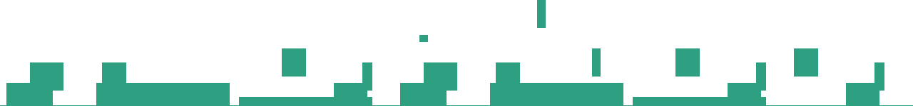
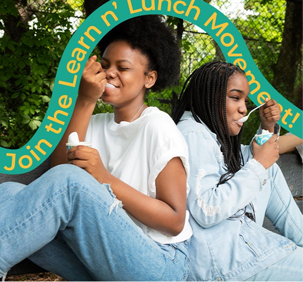
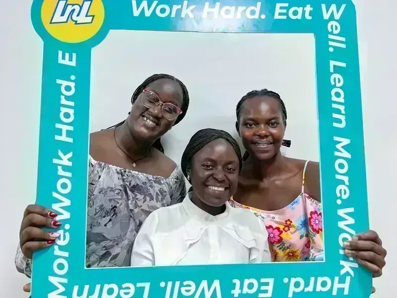
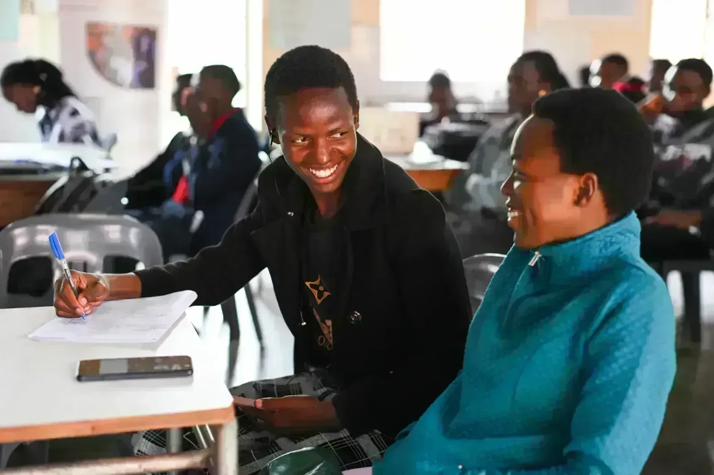
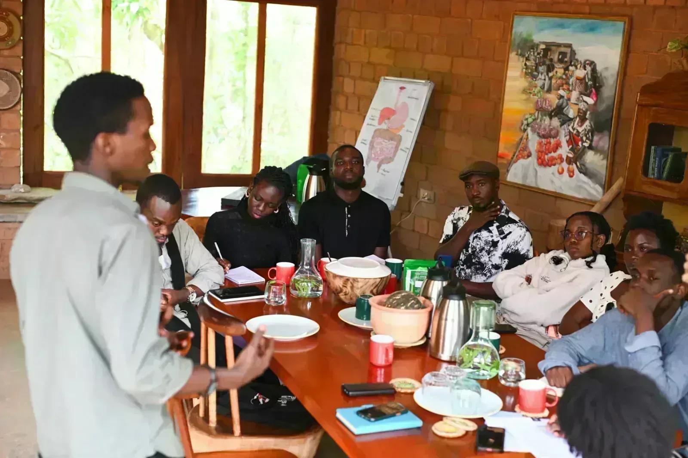
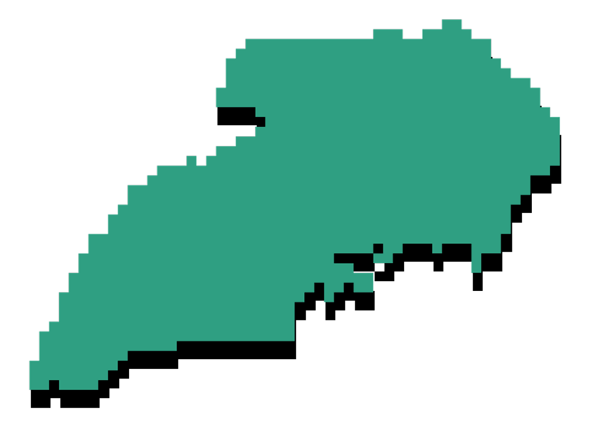

Discover how hidden costs affect university students in Uganda and why student support systems are essential for education success.
Read moreLearn And Lunch’s impact begins by making this hidden crisis visible


For Learn And Lunch, impact is not only about numbers. It is about whether students are safer, better represented, and more supported within higher education systems. Impact means students speaking about hunger without fear or shame, universities engaging with credible evidence on student food insecurity, practical solutions being tested and refined by students themselves, and advocacy efforts grounded in verified data and lived experience.

The Numbers Tell the Story
Students actively leading research, peer engagement, mobilisation, and advocacy across campuses.
Ongoing initiatives across research, education, advocacy, and student led food security solutions.
Team members guiding student leaders and ensuring ethical consistent programme delivery.
Students engaged through research, awareness, education sessions, campus activities, and digital media.
Faces Behind the Numbers
Discover how hidden costs affect university students in Uganda and why student support systems are essential for education success.
Read more
Food insecurity affects students differently. Learn why a gender lens is essential for creating inclusive food security solutions in Uganda’s universities.
Read more
Discover why food security in universities is essential for student success in Uganda. Learn how Learn And Lunch is tackling campus hunger through research, advocacy, and student-led solutions.
Read more
On March 28, 2026, Learn N' Lunch visited Body and Soil Africa in Mityana to explore a partnership tackling campus hunger — not through temporary food relief, but by empowering students with the knowledge and skills to become active participants in sustainable food systems
Read moreTap a campus pin to explore student ambassadors, reach, and expansion plans across Uganda.

AND WE'RE JUST
GETTING STARTED
Our roadmap for ending campus hunger — research, student networks, and practical solutions that guide Learn N' Lunch across universities.
Download FrameworkRead the latest outcomes, campus reach, and student stories. Download the full report to share with partners and donors.
Download Report